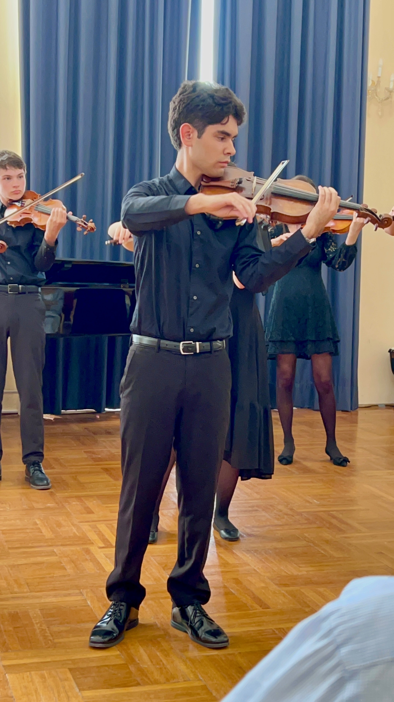
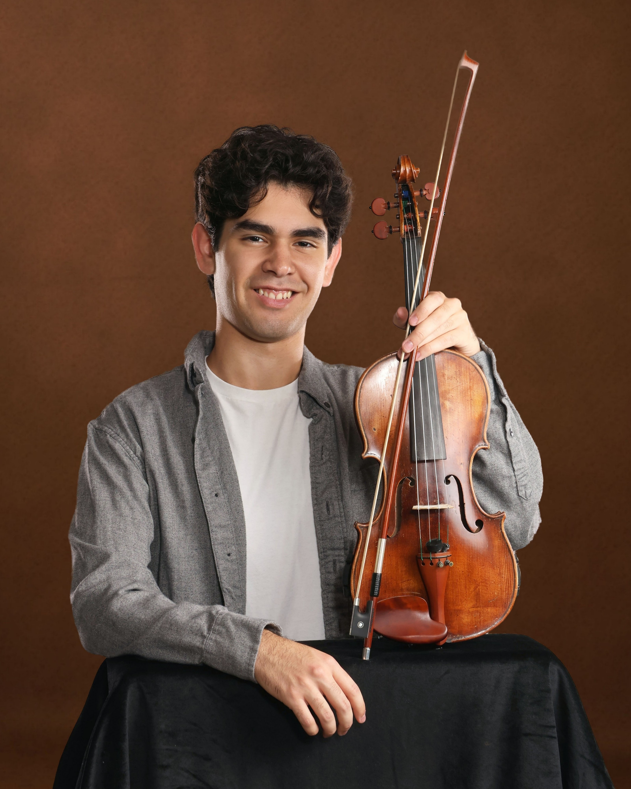
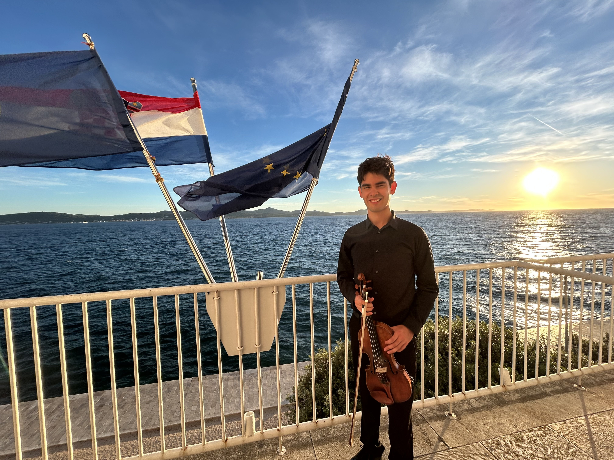
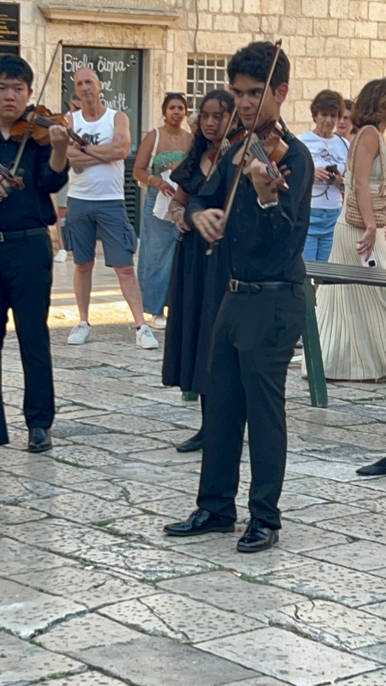

Suzuki-trained and stage-tested with a touring ensemble across three continents — Nicholas brings a refined, moving sound to your most important moments.

"What began as scales and sore fingers became a way to share something universal with anyone, from any background."
— Nicholas, on why he plays
Nicholas started violin at nine years old through the full Suzuki method and never looked back. Now a member of the Chicago Consort Violin Ensemble and a freshman at Miami University's Farmer School of Business, he brings years of disciplined training and real stage experience to every performance — from intimate ceremonies to formal galas.
Touring member since 2022 — performances across Chicagoland plus international dates in South Africa, Slovenia, and Croatia.
Featured soloist for the STARS Performance Program (2022).
Regular performer across Chicagoland venues.
Director's Award (2020, 2022) and Outstanding Prelude Member (2022), Suzuki-trained throughout.


Performance clips are being added soon — a short reel is the single best way to convert an inquiry into a booking. This spot is ready for the first one.
Live violin for ceremonies, receptions, cocktail hours, and corporate events — solo or paired with other Chicago Consort musicians.
Suzuki-method instruction for beginner through advanced students, taught with the same discipline that built his own playing.